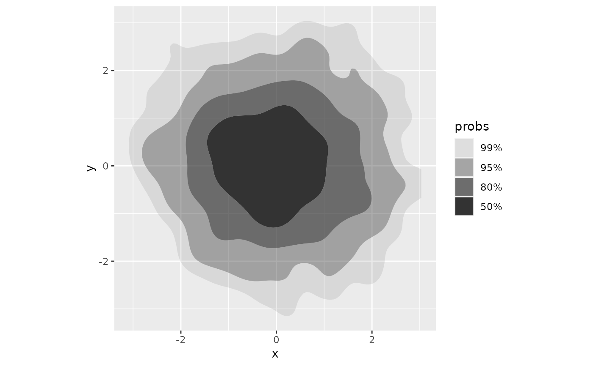
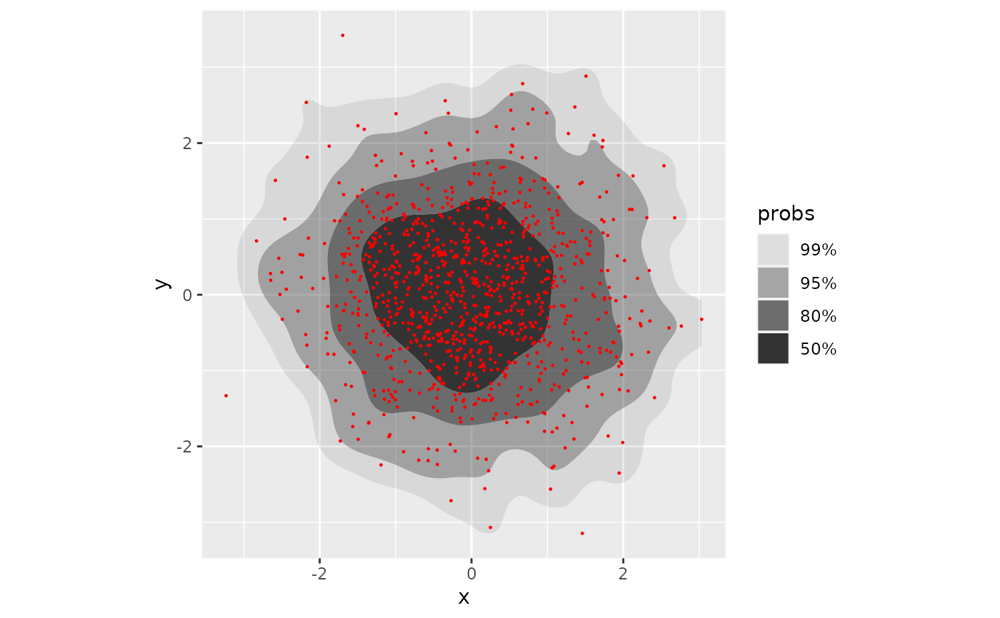
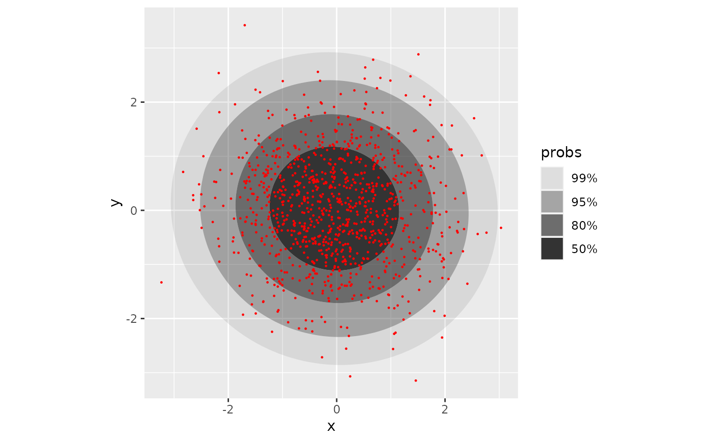
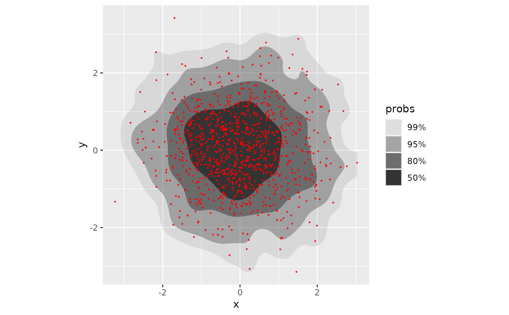
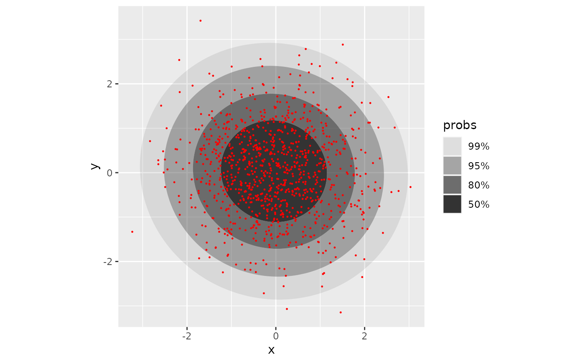
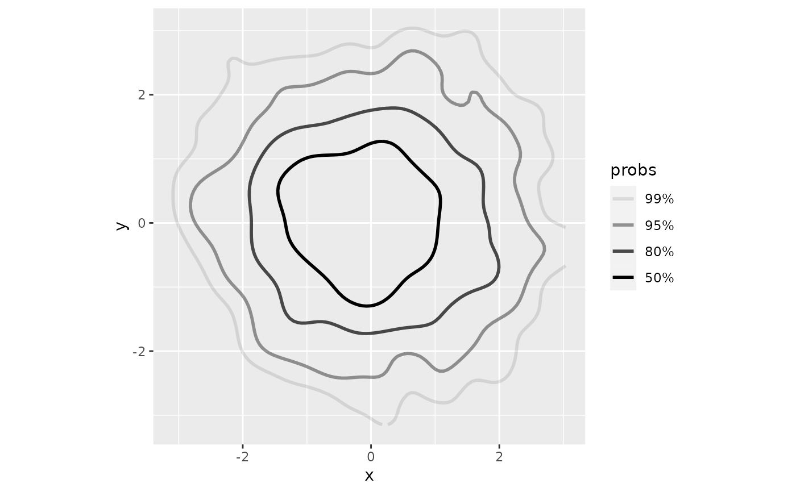
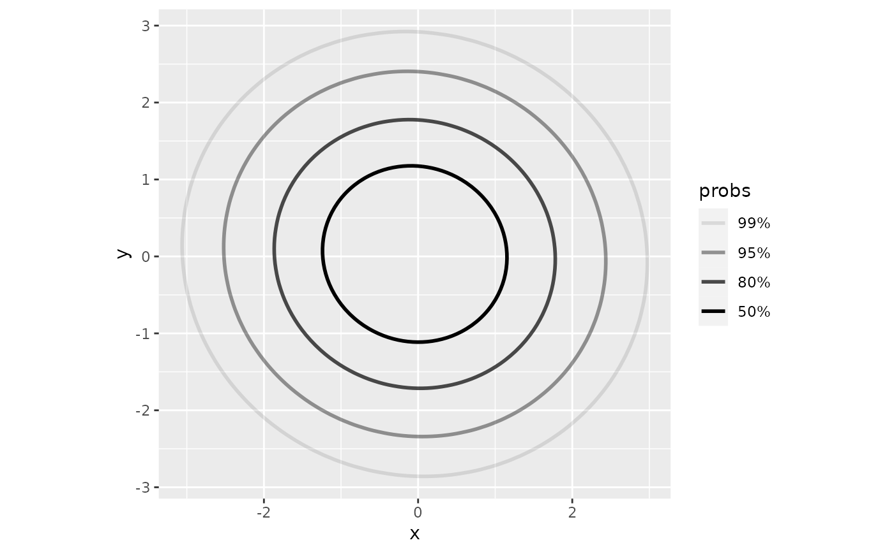
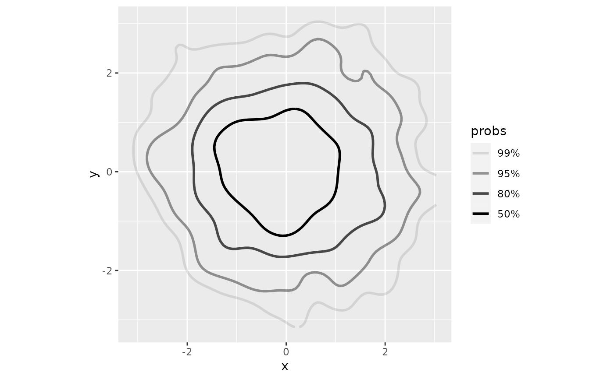
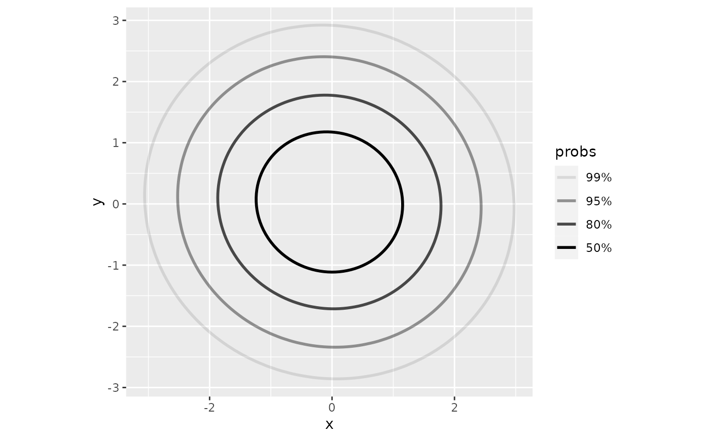

Perform 2D density estimation, compute and plot the resulting highest density
regions. geom_hdr() draws filled regions, and geom_hdr_lines() draws
lines outlining the regions. Note, the plotted objects have the probs mapped
to the alpha aesthetic by default.
Usage
stat_hdr(
mapping = NULL,
data = NULL,
geom = "hdr",
position = "identity",
...,
method = "kde",
probs = c(0.99, 0.95, 0.8, 0.5),
bins = NULL,
n = 100,
xlim = NULL,
ylim = NULL,
nudgex = "none",
nudgey = "none",
smooth = FALSE,
adjust = c(1, 1),
h = NULL,
na.rm = FALSE,
show.legend = NA,
inherit.aes = TRUE
)
geom_hdr(
mapping = NULL,
data = NULL,
stat = "hdr",
position = "identity",
...,
na.rm = FALSE,
show.legend = NA,
inherit.aes = TRUE
)
stat_hdr_lines(
mapping = NULL,
data = NULL,
geom = "hdr_lines",
position = "identity",
...,
method = "kde",
probs = c(0.99, 0.95, 0.8, 0.5),
bins = NULL,
n = 100,
xlim = NULL,
ylim = NULL,
nudgex = "none",
nudgey = "none",
smooth = FALSE,
adjust = c(1, 1),
h = NULL,
na.rm = FALSE,
show.legend = NA,
inherit.aes = TRUE
)
geom_hdr_lines(
mapping = NULL,
data = NULL,
stat = "hdr_lines",
position = "identity",
...,
na.rm = FALSE,
show.legend = NA,
inherit.aes = TRUE
)Arguments
- mapping
Set of aesthetic mappings created by
aes()oraes_(). If specified andinherit.aes = TRUE(the default), it is combined with the default mapping at the top level of the plot. You must supplymappingif there is no plot mapping.- data
The data to be displayed in this layer. There are three options:
If
NULL, the default, the data is inherited from the plot data as specified in the call toggplot().A
data.frame, or other object, will override the plot data. All objects will be fortified to produce a data frame. Seefortify()for which variables will be created.A
functionwill be called with a single argument, the plot data. The return value must be adata.frame, and will be used as the layer data. Afunctioncan be created from aformula(e.g.~ head(.x, 10)).- geom
The geometric object to use display the data
- position
Position adjustment, either as a string, or the result of a call to a position adjustment function.
- ...
Other arguments passed on to
layer(). These are often aesthetics, used to set an aesthetic to a fixed value, likecolour = "red"orsize = 3. They may also be parameters to the paired geom/stat.- method
Density estimator to use, accepts character vector:
"kde","histogram","freqpoly", or"mvnorm".- probs
Probabilities to compute highest density regions for.
- bins
Number of bins along each axis for histogram and frequency polygon estimators. Either a vector of length 2 or a scalar value which is recycled for both dimensions. Defaults to normal reference rule (Scott, pg 87).
- n
Resolution of grid used in discrete approximations for kernel density and parametric estimators.
- xlim, ylim
Range to compute and draw regions. If
NULL, defaults to range of data.- nudgex
Horizontal rule for choosing witness points for smoothed histogram method, accepts character vector:
"left","none","right".- nudgey
Vertical rule for choosing witness points for smoothed histogram method, accepts character vector:
"down","none","up".- smooth
If
TRUE, HDRs computed by the"histogram"method are smoothed.- adjust
A multiplicative bandwidth adjustment to be used if
hisNULL.- h
Bandwidth for kernel density estimator. If
NULL, estimated usingMASS::bandwidth.nrd()- na.rm
If
FALSE, the default, missing values are removed with a warning. IfTRUE, missing values are silently removed.- show.legend
logical. Should this layer be included in the legends?
NA, the default, includes if any aesthetics are mapped.FALSEnever includes, andTRUEalways includes. It can also be a named logical vector to finely select the aesthetics to display.- inherit.aes
If
FALSE, overrides the default aesthetics, rather than combining with them. This is most useful for helper functions that define both data and aesthetics and shouldn't inherit behaviour from the default plot specification, e.g.borders().- stat
The statistical transformation to use on the data for this layer, as a string.
Aesthetics
geom_hdr understands the following aesthetics (required aesthetics are in bold):
x
y
alpha
color
fill
group
linetype
size
subgroup
geom_hdr_lines understands the following aesthetics (required aesthetics are in bold):
x
y
alpha
color
group
linetype
size
subgroup
Computed variables
- probs
The probability associated with the highest density region, specified by
probs.
Examples
# basic simulated data with bivariate normal data and various methods
# (note: code is commented out in this file to save cran check time)
df <- data.frame(x = rnorm(1000), y = rnorm(1000))
p <- ggplot(df, aes(x, y)) + coord_equal()
p + geom_hdr()

p + geom_hdr(method = "mvnorm")
 p + geom_hdr(method = "freqpoly")
p + geom_hdr(method = "freqpoly")
 # p + geom_hdr(method = "histogram")
# adding point layers on top to visually assess region estimates
pts <- geom_point(size = .2, color = "red")
p + geom_hdr() + pts

p + geom_hdr(method = "mvnorm") + pts

p + geom_hdr(method = "freqpoly") + pts
# p + geom_hdr(method = "histogram")
# adding point layers on top to visually assess region estimates
pts <- geom_point(size = .2, color = "red")
p + geom_hdr() + pts

p + geom_hdr(method = "mvnorm") + pts

p + geom_hdr(method = "freqpoly") + pts
 # p + geom_hdr(method = "histogram") + pts
# 2+ groups - mapping other aesthetics in the geom
rdata <- function(n, n_groups = 3, radius = 3) {
list_of_dfs <- lapply(0:(n_groups-1), function(k) {
mu <- c(cos(2*k*pi/n_groups), sin(2*k*pi/n_groups))
m <- MASS::mvrnorm(n, radius*mu, diag(2))
structure(data.frame(m, as.character(k)), names = c("x", "y", "c"))
})
do.call("rbind", list_of_dfs)
}
dfc <- rdata(1000, n_groups = 5)
pf <- ggplot(dfc, aes(x, y, fill = c)) + coord_equal()
pf + geom_hdr()

if (FALSE) {
pf + geom_hdr(method = "mvnorm")
pf + geom_hdr(method = "mvnorm", probs = .90, alpha = .5)
pf + geom_hdr(method = "histogram")
pf + geom_hdr(method = "freqpoly")
}
# highest density region boundary lines
p + geom_hdr_lines()

p + geom_hdr_lines(method = "mvnorm")
# p + geom_hdr(method = "histogram") + pts
# 2+ groups - mapping other aesthetics in the geom
rdata <- function(n, n_groups = 3, radius = 3) {
list_of_dfs <- lapply(0:(n_groups-1), function(k) {
mu <- c(cos(2*k*pi/n_groups), sin(2*k*pi/n_groups))
m <- MASS::mvrnorm(n, radius*mu, diag(2))
structure(data.frame(m, as.character(k)), names = c("x", "y", "c"))
})
do.call("rbind", list_of_dfs)
}
dfc <- rdata(1000, n_groups = 5)
pf <- ggplot(dfc, aes(x, y, fill = c)) + coord_equal()
pf + geom_hdr()

if (FALSE) {
pf + geom_hdr(method = "mvnorm")
pf + geom_hdr(method = "mvnorm", probs = .90, alpha = .5)
pf + geom_hdr(method = "histogram")
pf + geom_hdr(method = "freqpoly")
}
# highest density region boundary lines
p + geom_hdr_lines()

p + geom_hdr_lines(method = "mvnorm")
 if (FALSE) {
pc <- ggplot(dfc, aes(x, y, color = c)) + coord_equal() + theme_minimal() +
theme(panel.grid.minor = element_blank())
pc + geom_hdr_lines()
pc + geom_hdr_lines(method = "mvnorm")
}
# data with boundaries
if (FALSE) {
ggplot(df, aes(x^2)) + geom_histogram(bins = 30)
ggplot(df, aes(x^2)) + geom_histogram(bins = 30, boundary = 0)
ggplot(df, aes(x^2, y^2)) + geom_hdr(method = "histogram")
}
if (FALSE) {
pc <- ggplot(dfc, aes(x, y, color = c)) + coord_equal() + theme_minimal() +
theme(panel.grid.minor = element_blank())
pc + geom_hdr_lines()
pc + geom_hdr_lines(method = "mvnorm")
}
# data with boundaries
if (FALSE) {
ggplot(df, aes(x^2)) + geom_histogram(bins = 30)
ggplot(df, aes(x^2)) + geom_histogram(bins = 30, boundary = 0)
ggplot(df, aes(x^2, y^2)) + geom_hdr(method = "histogram")
}